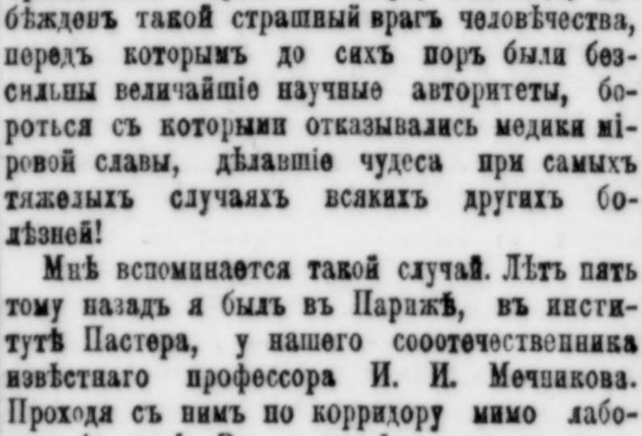
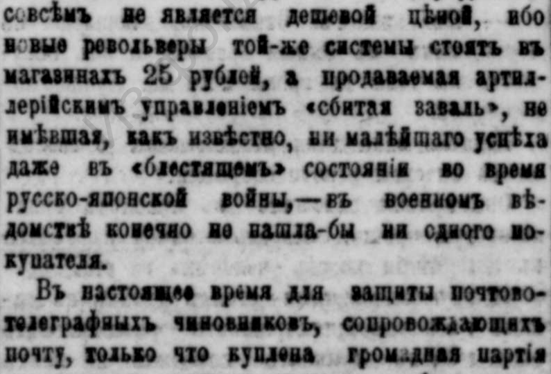
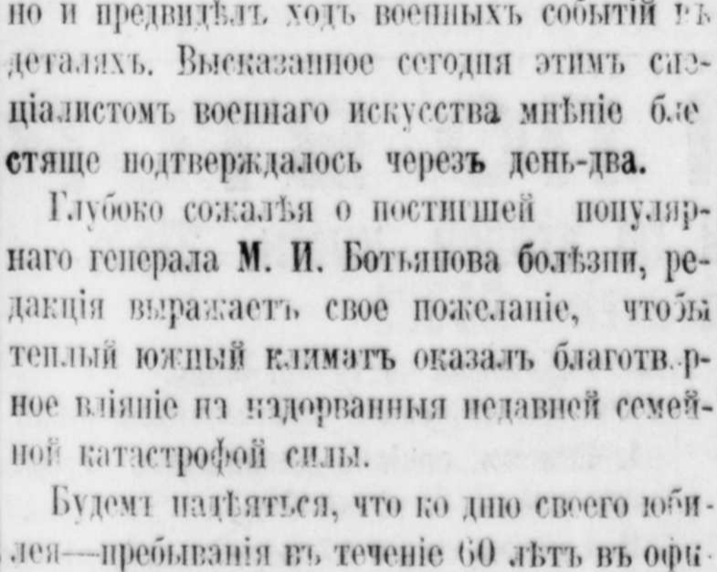
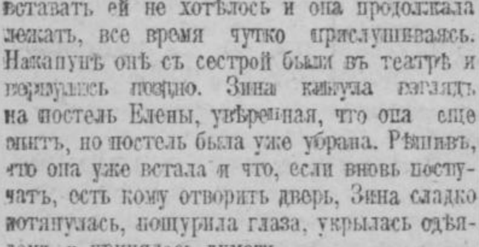
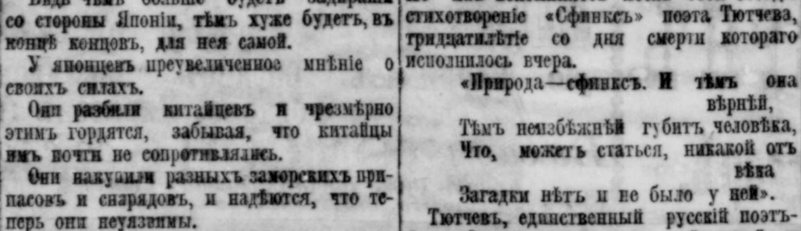
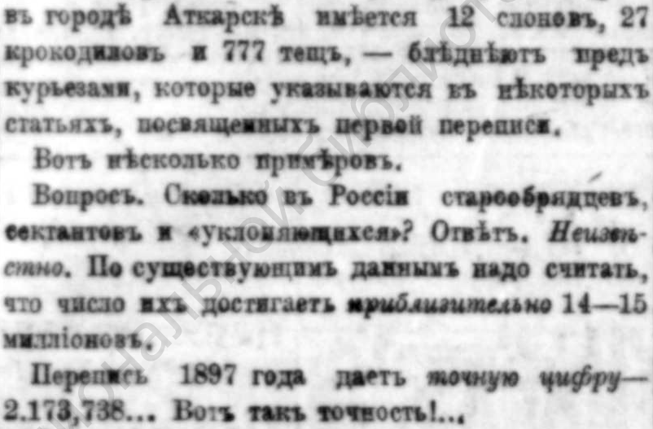
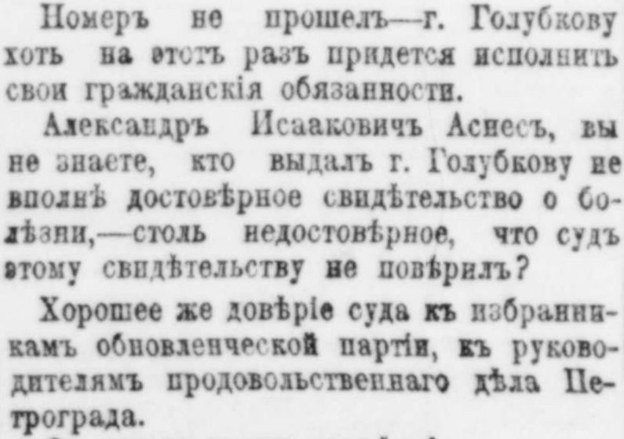
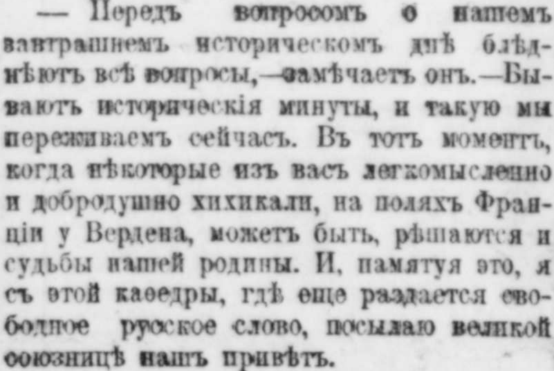
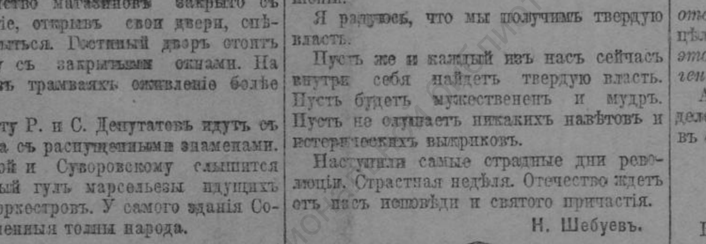

бѣжденъ такой страшный врагъ человѣчества, передъ которымъ до сихъ поръ были безсильны величайшіе научные авторитеты, бороться съ которыми отказывались медики міровой славы, дѣлавшіе чудеса при самыхъ тяжелыхъ случаяхъ всякихъ другихъ болѣзней! Мнѣ вспоминается такой случай. Лѣтъ пять тому назадъ я былъ въ Парижѣ, въ институтѣ Пастера, у нашего сооотечественника извѣстнаго профессора И. И. Мечникова. Проходя съ нимъ по корридору мимо

совсѣмъ не является дешевой цѣной, ибо новые револьверы той-же системы стоятъ въ магазинахъ 25 рублей, а продаваемая артиллерійскимъ управленіемъ «сбитая заваль», не имѣвшая, какъ извѣстно, ни малѣйшаго успѣха даже въ «блестящемъ» состояніи во время русско-японской войны,—въ военномъ вѣдомствѣ конечно не нашла-бы ни одного покупателя. Въ настоящее время для защиты почтово-телеграфныхъ чиновниковъ, сопровождающихъ почту, только что куплена громадная партія

но и предвидѣлъ ходъ военныхъ событій въ деталяхъ. Высказанное сегодня этимъ спеціалистомъ военнаго искусства мнѣніе блестяще подтверждалось черезъ день-два. Глубоко сожалѣя о постигшей популярнаго генерала М. И. Ботьянова болѣзни, редакція выражаетъ свое пожеланіе, чтобы теплый южный климатъ оказалъ благотворное вліяніе на надорванныя недавней семейной катастрофой силы. Будемъ надѣяться, что ко дню своего юбилея—пребыванія въ теченіе 60 лѣтъ въ

вставать ей не хотѣлось и она продолжала лежать, все время чутко прислушиваясь. Наканунѣ онѣ съ сестрой были въ театрѣ и вернулись поздно. Зина кинула взглядъ на постель Елены, увѣренная, что она еще спитъ, но постель была уже убрана. Рѣшивъ, что она уже встала и что, если вновь постучатъ, есть кому отворить дверь, Зина сладко потянулась, пощурила глаза, укрылась

со стороны Японіи, тѣмъ хуже будетъ, въ концѣ концовъ, для нея самой. У японцевъ преувеличенное мнѣніе о своихъ силахъ. Они разбили китайцевъ и чрезмѣрно этимъ гордятся, забывая, что китайцы имъ почти не сопротивлялись. Они накупили разныхъ заморскихъ припасовъ и снарядовъ, и надѣются, что теперь они неуязвимы.

въ городѣ Аткарскѣ имѣется 12 слоновъ, 27 крокодиловъ и 777 тещъ, — блѣднѣютъ предъ курьезами, которые указываются въ нѣкоторыхъ статьяхъ, посвященныхъ первой переписи. Вотъ нѣсколько примѣровъ. Вопросъ. Сколько въ Россіи старообрядцевъ, сектантовъ и «уклоняющихся»? Отвѣтъ. Неизвѣстно. По существующимъ даннымъ надо считать, что число ихъ достигаетъ приблизительно 14—15 милліоновъ. Перепись 1897 года даетъ точную цифру—2.173,738... Вотъ такъ точность!..

Номеръ не прошелъ—г. Голубкову хоть на этотъ разъ придется исполнить свои гражданскія обязанности. Александръ Исааковичъ Аснесъ, вы не знаете, кто выдалъ г. Голубкову не вполнѣ достовѣрное свидѣтельство о болѣзни,—столь недостовѣрное, что судъ этому свидѣтельству не повѣрилъ? Хорошее же довѣріе суда къ избранникамъ обновленческой партіи, къ руководителямъ продовольственнаго дѣла Петрограда.

— Передъ вопросомъ о нашемъ завтрашнемъ историческомъ днѣ блѣднѣютъ всѣ вопросы,—замѣчаетъ онъ.—Бываютъ историческія минуты, и такую мы переживаемъ сейчасъ. Въ тотъ моментъ, когда нѣкоторые изъ васъ легкомысленно и добродушно хихикали, на поляхъ Франціи у Вердена, можетъ быть, рѣшаются и судьбы нашей родины. И, памятуя это, я съ этой каѳедры, гдѣ еще раздается свободное русское слово, посылаю великой союзницѣ нашъ привѣтъ.

Я радуюсь, что мы получимъ твердую власть. Пусть же и каждый изъ насъ сейчасъ внутри себя найдетъ твердую власть. Пусть будетъ мужествененъ и мудръ. Пусть не слушаетъ никакихъ навѣтовъ и истерическихъ выкриковъ. Наступили самые страдные дни революціи. Страстная недѣля. Отечество ждетъ отъ насъ исповѣди и святого причастія. Н. Шебуевъ.